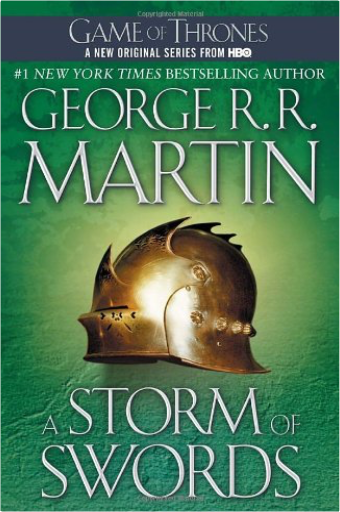
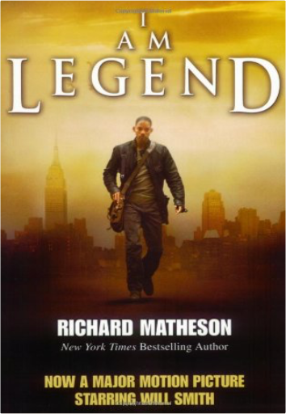
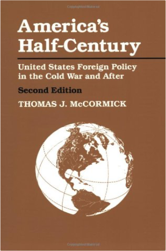
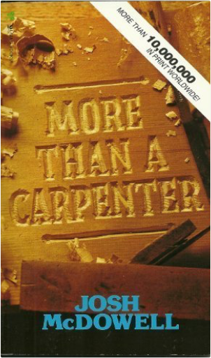
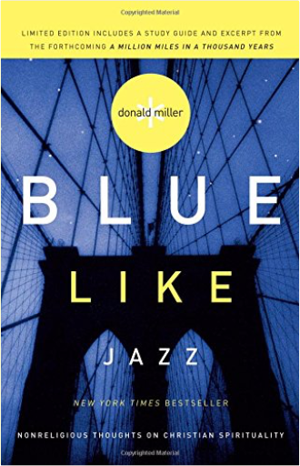
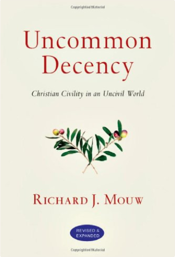

 A Storm of Swords: A Song of Ice and Fire: Book ThreeGeorge R.R. Martin THE BOOK BEHIND THE THIRD SEASON OF GAME OF THRONES, AN ORIGINAL SERIES NOW ON HBO.  I Am LegendRichard MathesonRobert Neville may well be the last living man on Earth . . . but he is not alone.  America's Half-Century: United States Foreign Policy in the Cold War and AfterThomas J. McCormickDid the United States "win" the Cold War? In its self-congratulatory euphoria, argues Thomas McCormick in this new edition of his highly acclaimed study, America neglected a twenty-year process of political and economic devolution―the real threat to global peace and prosperity. Revised andupdated through 1993, it describes how the end of the Cold War affected the United States's global role as well as suggesting what possibilities lie ahead for a restructured world-system.  More Than A CarpenterJosh McDowellShows some signs of wear, and may have some markings on the inside. 100% Money Back Guarantee. The American Presidency: Origins and Development, 1776-2002 (American Presidency) (American Presidency (CQ))Sidney M. Milkis, Michael Nelson This work examines the executive office's constitutional precepts as well as the social, economic, political, and international conditions that impact a president's leadership. It discusses patterns of presidential conduct, focusing on how particular presidents have shaped the office.  Blue Like Jazz: Nonreligious Thoughts on Christian SpiritualityDonald Miller"I never liked jazz music because jazz music doesn't resolve. I used to not like God because God didn't resolve. But that was before any of this happened." ?Donald Miller Paradise LostJohn Milton, John Leonard John Milton's celebrated epic poem exploring the cosmological, moral and spiritual origins of man's existence, Paradise Lost has been fully revised with an introduction by John Leonard in Penguin Classics. In Paradise Lost Milton produced poem of epic scale, conjuring up a vast, awe-inspiring cosmos and ranging across huge tracts of space and time, populated by a memorable gallery of grotesques. And yet, in putting a charismatic Satan and naked, innocent Adam and Eve at the centre of this story, he also created an intensely human tragedy on the Fall of Man. Written when Milton was in his fifties - blind, bitterly disappointed by the Restoration and in danger of execution - Paradise Lost's apparent ambivalence towards authority has led to intense debate about whether it manages to 'justify the ways of God to men', or exposes the cruelty of Christianity. John Leonard's revised edition of Paradise Lost contains full notes, which elucidates Milton's biblical, classical and historical allusions and discuss his vivid, highly original use of language and blank verse. John Milton (1608-1674) spent his early years in scholarly pursuit. In 1649 he took up the cause for the new Commonwealth, defending the English revolution both in English and Latin - and sacrificing his eyesight in the process. He risked his life by publishing The Ready and Easy Way to Establish a Free Commonwealth on the eve of the Restoration (1660). His great poems were published after this political defeat. If you enjoyed Paradise Lost, you might like Dante's Inferno, also available in Penguin Classics. 'An endless moral maze, introducing literature's first Romantic, Satan'  Uncommon Decency: Christian Civility in an Uncivil WorldRichard J. MouwCan Christians act like Christians even when they disagree? In these wild and diverse times, right and left battle over the airwaves, prolifers square off against prochoicers, gay liberationists confront champions of the traditional family, artists and legislators tangle, even Christians fight other Christians whose doctrines aren't "just so." Richard Mouw has been actively forging a model of Christian civil conversation with those we might disagree with―atheists, Muslims, gay activists and more. He is concerned that, too often, Christians have contributed more to the problem than to the solution. But he recognizes―from his dialogues with those from many perspectives―that it's not easy to hold to Christian convictions and treat sometimes vindictive opponents with civility and decency. Few if any people in the evangelical world have conversed as widely and sensitively as Mouw. So few can write more wisely or helpfully than Mouw does here about what Christians can appreciate about pluralism, the theological basis for civility, and how we can communicate with people who disagree with us on the issues that matter most. 1984George Orwell View our feature on George Orwell’s 1984.Written in 1948, 1984 was George Orwell’s chilling prophecy about the future. And while 1984 has come and gone, Orwell’s narrative is timelier than ever. 1984 presents a startling and haunting vision of the world, so powerful that it is completely convincing from start to finish. No one can deny the power of this novel, its hold on the imaginations of multiple generations of readers, or the resiliency of its admonitions—a legacy that seems only to grow with the passage of time. Animal Farm: Anniversary EditionGeorge Orwell Animal Farm is the most famous by far of all twentieth-century political allegories. Its account of a group of barnyard animals who revolt against their vicious human master, only to submit to a tyranny erected by their own kind, can fairly be said to have become a universal drama. Orwell is one of the very few modern satirists comparable to Jonathan Swift in power, artistry, and moral authority; in animal farm his spare prose and the logic of his dark comedy brilliantly highlight his stark message. |
 Made with Delicious Library
Made with Delicious LibrarySpringfield, State zipflap congrotus delicious library Pedrie, John